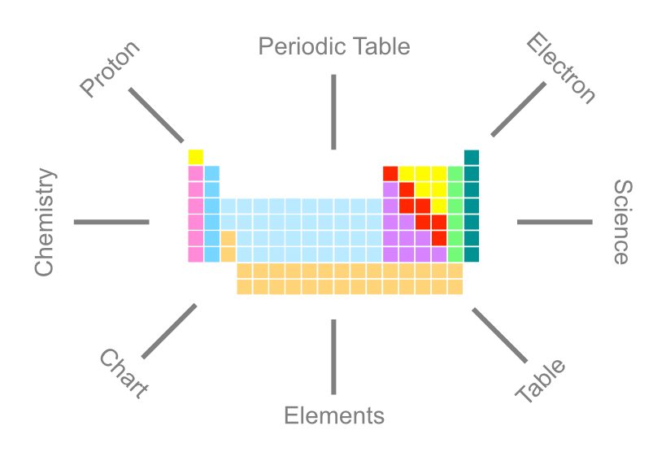

When you publish a learning object to the LOR, you are not just making it easier to manage and build your own courses, but you are potentially helping your colleagues to do the same. It is essential that your colleagues can find the learning objects that you publish to the LOR. Including good metadata will make this type of discovery possible.

Metadata is descriptive information that can classify, categorize, explain, or identify your learning object.
Example: A graphic depicting the periodic table of elements.
In the graphic on the right, you can see that many terms can be used to describe the periodic table. These terms are considered metadata, and can be included when uploading this graphic to the LOR. This inclusion can make it very easy to locate the object for use in other courses.
The proper use of metadata can bring